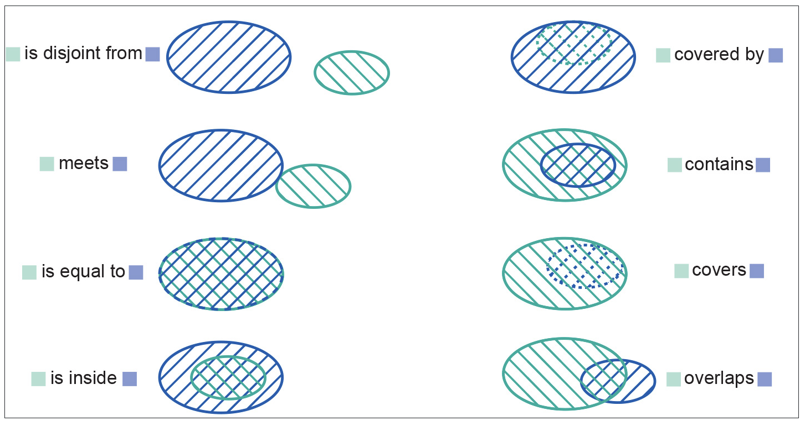
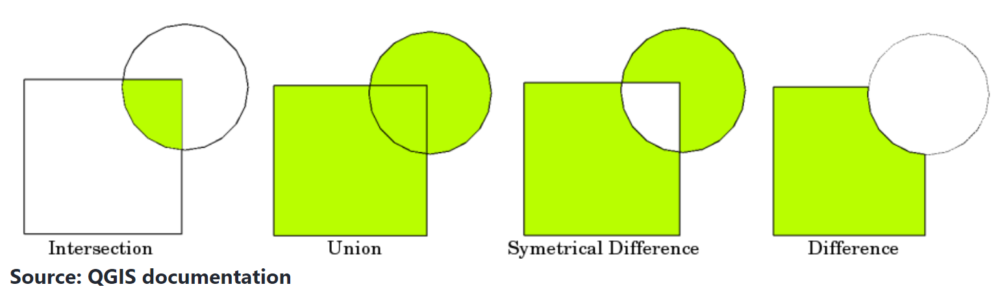

5. Geospatial Analysis#
UNDER CONSTRUCTION
1st ‘Law’ of Geography#
“everything is related to everything else, but near things are more related than distant things.” - Walder Tobler
not a scientific law, more of a starting point for thinking about why things are happening where
Spatial Autocorrelation#
Spatial autocorrelation measures how similar values of a variable are relative to how close they are.
Moran’s I: Values range from -1 to +1, such that -1 would represent a checkerboard pattern and values near +1 would represent elevation in flat regions.
Geary’s C
Local Indicators of Spatial Association (LISA)
Topological Relations#
disjoint / intersects
is equal to
contains / within
overlap with 
Set Operations#

Clip#
Keeps only part of a raster or vector that intersects with the clipping shape
Buffer#
Add or subtract buffer distance to points, lines, or polygon vectors
Point Pattern Analysis#
Kernel Density Estimation
Convex Hull: Minimum bounding geometry from common points
Ripley’s K: Point Clustering at different search distances / bandwidths
Getis Ord D: Hot Spot / Cold Spot Analysis
Interpolation#
Estimate a value at a location based on surrounding locations (over time or space)
methods: nearest neighbor, bilinear, cubic resampling methods for reprojecting rasters (NN basic/fastest -> cubic most intensive)
Inverse Distance Weighted (IDW) - less weight is given to point values further away
Kriging - first derivative describes the rate that values change over a distance, or the effect of distance on the attribute, and is used to interpolate unknown locations across space
Global statistics#
Band (
b) algebra:b1 + b2Threshold/mask
Filters#
Require user-input kernel size/radius/distance for the moving window calculation
Low-pass filter: Smooths surface
High-pass filter: Edge-enhancement / sharpening
Descriptive Analytics#
Central tendency: mean, median, mode
Dispersion: range, variance, standard deviation
Distribution visualization: histogram, bar chart, box plot
Predictive Analytics#
Predicts future or past value based on known (often time-series) values
Regression:
Ordinary Least Squares (OLS)
Spatial Lag Model
Spatial Error Model
Geographic Weighted Regression (GWR)
Clustering:
DBSCAN
K-means
Principal Component Analysis (PCA)
Supervised Classification:
Random Forest (RF)
Support Vector Machine (SVM)
Deep Learning:
Prescriptive Analytics#
Suggests decision options for how to take advantage of a future opportunity or mitigate a future risk, and shows the implication of each decision option.
Site Suitability Analysis (SSA)
Multi-Criteria Decision Analysis (MCDA)
Analytical Hierarchy Process (AHP)
-
Service Area: Travel times to customer. For example) to decide where to put fire station. regular buffer, cost over surface (elevation/slope), network (street travel time)
Find closest facility for incidents
An origin-destination (OD) cost matrix from multiple origins to multiple destinations, is a table that contains the cost, such as the travel time or travel distance, from each origin to each destination
Location Allocation: be far from competition but near customers
Vehicle Routing Problem goal is to best service the orders and minimize the overall operating cost for the fleet of vehicles
starts with OD cost matrix, iterates adds real-world heuristics